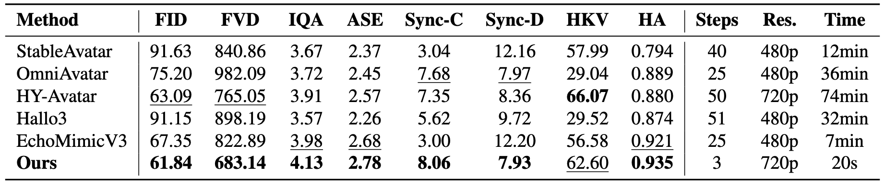
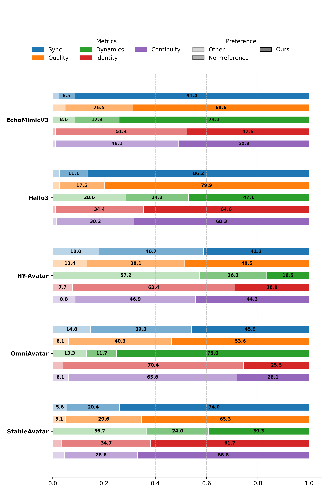
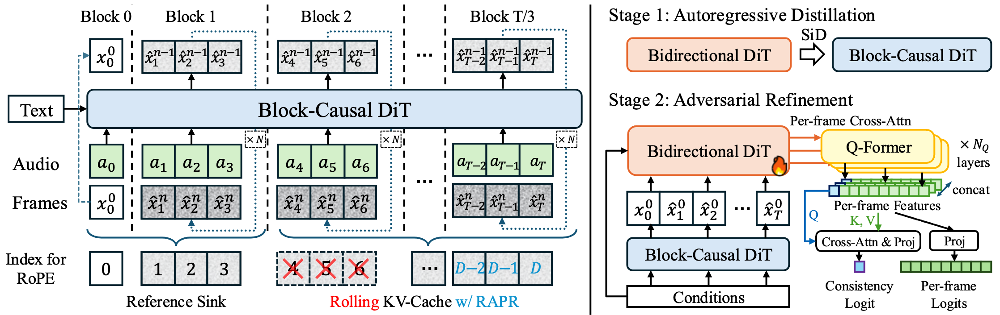
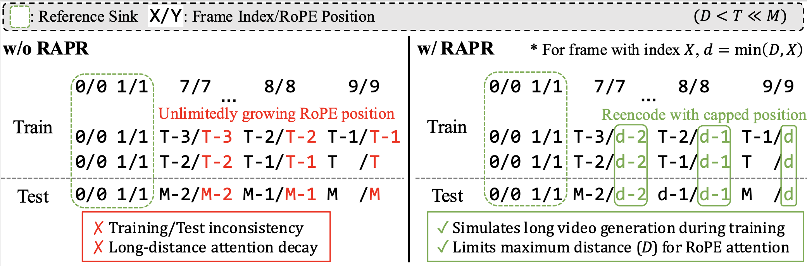
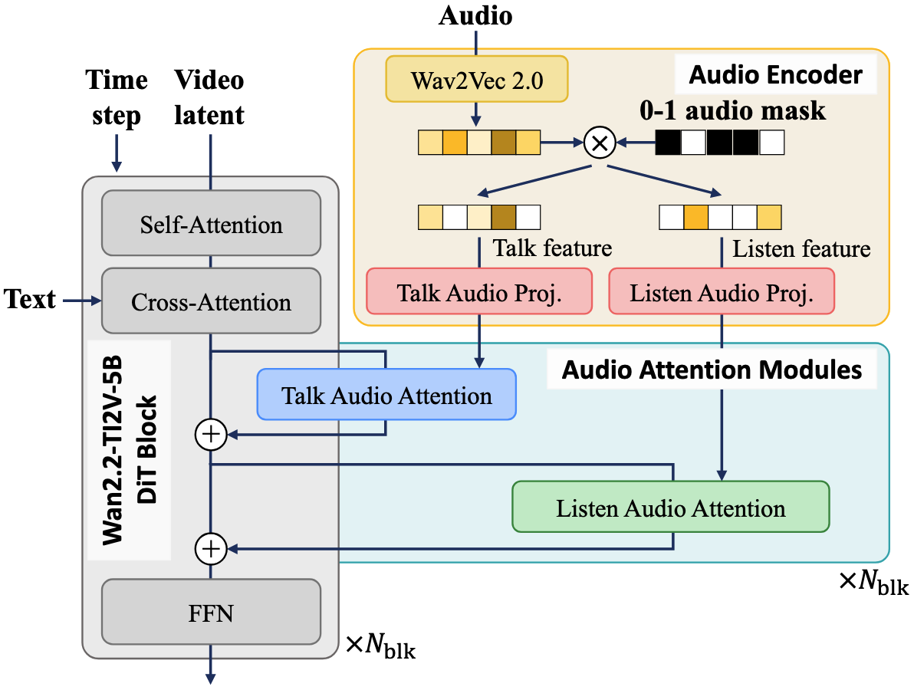

Our method demonstrates accurate lip synchronization, high visual quality, good identity preservation, less distortion, and rich motions, while requiring much less generation time.
Our method also works on stylized characters such as cartoons and drawings.
Our method can generate singing human videos.
Our streaming approach enables infinite-length video generation with consistent quality.
We compare our model with state-of-the-art talking human video generation methods, including Hallo3, HunyuanVideo-Avatar (HY-Avatar), OmniAvatar, EchoMimicV3, and StableVideo. Our method achieves realistic and consistent avatars with accurate synchronization and rich motion dynamics while exhibiting fewer distortions, even though it requires much less computation.
StreamAvatar can respond to user audio input and generate natural listening reactions, enabling truly interactive avatar experiences.
Our method can respond to the listening audio and generate natural reactions, and transition smoothly between talking and listening states.
We compare our method with state-of-the-art interactive head avatars: INFP and ARIG. Although our model is designed and trained for body video generation, it still performs on par with dedicated head avatar methods, while delivering the best visual quality.
We compare our method with state-of-the-art streaming avatars. Compared to MIDAS, our method produces more accurate lip synchronization and more vivid expressions. It is also worth noting that our method is one-shot, whereas MIDAS requires person-specific fine-tuning.
Compared to X-Streamer, our method exhibits more natural listening behavior, more diverse motions, and higher visual quality.
Our method achieves superior or highly competitive performance across all metrics. We also report the number of denoising steps, resolution, and time taken to produce a 5-second video on a single H20 GPU. Our method is significantly faster than other methods.

User preference study comparing our method against baselines across multiple criteria: audio–lip synchronization (Sync), motion dynamics (Dynamics), temporal continuity and smoothness (Continuity), visual quality and naturalness (Quality), and identity preservation (Identity). Results are formatted as “Ours% / Baseline%”, and the remaining percentage accounts for “no preference”. Our method consistently outperforms the state-of-the-art baselines across nearly all comparisons, which aligns closely with our quantitative evaluation.

To enable real-time generation, we distribute the DiT denoising and VAE decoding processes across two H800 GPUs. Performance is evaluated using the Real Time Factor (RTF) and First Frame Delay (FFD). Metrics for generating videos at 25 FPS with a resolution of 928×704 are reported in the table below We report the metrics when generating a 25 FPS videos at 928×704 resolution in the table below. Since all RTF values are below 1, the system supports real-time generation. The overall latency is FFD + input chunk length (0.48s) = 1.20s.
| Module | RTF | FFD |
|---|---|---|
| DiT | 0.69 | 0.33s |
| VAE | 0.82 | 0.39s |
Our two-stage adaptation framework transforms a bidirectional (non-causal) human video diffusion model into a block-causal streaming model capable of real-time, infinite-length generation.

The original bidirectional DiT is re-architected into a block-causal DiT, followed by Score Identity Distillation. A Reference Sink and Reference-Anchored Positional Re-encoding (RAPR) is introduced to improve long-term stability and consistency.
We further refine the model with a consistency-aware discriminator to improve generation quality, consistency, and stability.

Vanilla RoPE vs RoPE with Reference-Anchored Positional Re-encoding (RAPR). RAPR improves long video generation without the need for long video training.

The architecture of our interactive human video generation teacher model. We extend the original video model with audio-related modules to support talking and listening audio conditioning.
If you find our work useful, please consider citing:
@article{streamavatar2025,
title={StreamAvatar: Streaming Diffusion Models for Real-Time Interactive Human Avatars},
author={Zhiyao Sun and Ziqiao Peng and Yifeng Ma and Yi Chen and Zhengguang Zhou and Zixiang Zhou and Guozhen Zhang and Youliang Zhang and Yuan Zhou and Qinglin Lu and Yong-Jin Liu},
year={2025},
eprint={2512.22065},
archivePrefix={arXiv},
primaryClass={cs.CV},
url={https://arxiv.org/abs/2512.22065},
}